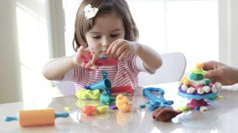
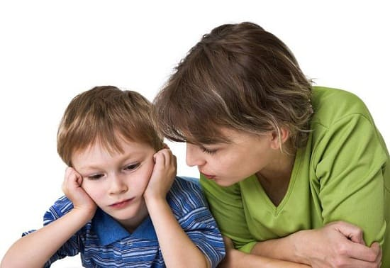
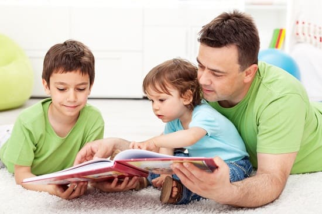
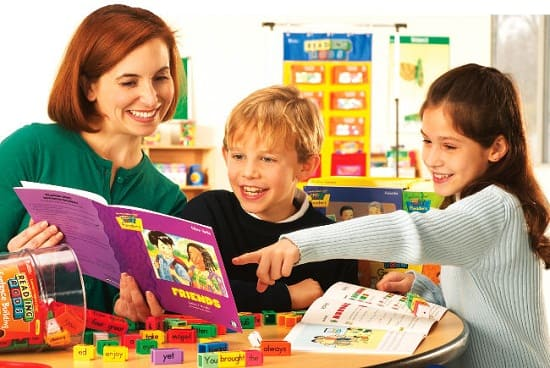

Подобно тому, как есть те, кто поздно начинает ходить, существуют и те, кто поздно начинает говорить. Существуют две стадии развития речи: язык восприятия (насколько хорошо ваш ребенок понимает) и язык выражения (насколько хорошо он говорит). Язык восприятия отображает слуховые и когнитивные способности. Если у ребенка хорошо развит язык восприятия, что означает, что он понимает простые просьбы, тогда вам не стоит беспокоиться. Типичное высказывание родителей при оценке их ребенка: «Он все понимает, но мало разговаривает». Многие малыши все еще используют язык тела, чтобы выразить то, что они хотят. Запомните, речь — это то, что ребенок говорит, а язык включает жесты, знаки и все виды языка тела. Вы ведь хотите, чтобы ваш ребенок свободно общался всеми способами, не только словами. Задержка речевого развития чаще встречается у мальчиков и иногда называется «Синдром Эйнштейна», поскольку, как известно, этот гений поздно начал говорить.
НОРМАЛЬНЫЕ ЭТАПЫ РАЗВИТИЯ РЕЧИ
Языковое развитие у детей сильно различается. Этапы, перечисленные ниже, описывают минимальное количество слов, которое большинство детей должны знать в том или ином возрасте. Если ваш ребенок не полностью отвечают этому описанию, это не обязательно означает, что вам нужно беспокоиться. Обсудите развитие с врачом вашего ребенка во время следующего осмотра.
Сколько слов должен знать ребенок:

КОГДА БЕСПОКОИТЬСЯ
Помимо несоответствия упомянутым выше этапам, существуют некоторые другие факторы, которые должны подтолкнуть вас к посещению врача:
ЧТО ДЕЛАТЬ
Ведите речевой дневник. Как и в случае других аспектов развития, наличие прогресса важнее сроков. Пока ваш малыш добавляет примерно одно слово в неделю и к двум годам использует фразы, состоящие из двух слов, которые к трехлетнему возрасту превращаются в разборчивые предложения, вам не стоит беспокоиться. Однако если у него «плато», то есть он не добавляет достаточное количество новых слов в течение 3 — 6 месяцев, вы должны обратиться к врачу или дефектологу, чтобы проверить, нет ли у ребенка проблем развития. К задержке развития речи могут привести анатомические аномалии (укорочение уздечки языка, неправильная форма неба или дискоординация мышц рта и языка), служащие причиной нечленораздельной речи.
ВОСПИТАНИЕ ХОРОШЕГО СОБЕСЕДНИКА
Читайте вместе с ребенком. Вместе смотрите книжки с картинками. Задавайте ему вопросы по картинкам: «Где мяч?» Используйте концепцию, которую мы называем «расширение» — расширяйте слово в идею. Например, если во время чтения ваш ребенок спрашивает: «Что это?» — вы отвечаете: «Это птица». Затем вы добавляете: «Птицы летают в небе». Вы не только ответили на его вопрос, но также сообщили ему мысль, связанную с этим словом, — что птицы летают в небе. Когда вы читаете книгу, указывайте на разные картинки и задавайте ребенку вопросы, например: «Где собака?», «Где мальчик?» Просите ребенка находить картинки и указывать на них. Таким образом он учится соотносить звук с картинкой.

Используйте подходящие для обучения моменты. Речевое обучение получается, а не преподается. Исследования установили, что общение, инициатором которого выступает ребенок, более значительно, чем общение, инициатором которого выступает родитель. Обращайте внимание на поводы для начала разговора. Предположим, вы гуляете в парке, и ваш ребенок указывает на собаку. Начните говорить о том, как «собаки бегают, прыгают и лают». Ваш ребенок, скорее всего, будет повторять этц звуки. Если ваш ребенок указывает на небо и произносит «пи», имея в виду «птица», добавьте правильный звук: «Да, это птица. Давай поищем еще птичек». Используя такое начало беседы, предложенной ребенком, продолжайте повторять слова, которые интересны ему.
Играйте с частями тела. Малышам нравится изучать свое тело и называть его части. Спросите ребенка, где его глаза, нос и пупок. Попросите указать их. Помимо краткого урока анатомии, таким образом вы учите ребенка правильным названиям частей тела.
Будьте повествователем. Когда вы совершаете ежедневные ритуалы со своим ребенком, например, купание и переодевание, сопровождайте это комментариями: «А сейчас мы наденем подгузник», «Сейчас мы наденем твою рубашку» и так далее. Одеваясь или занимаясь хозяйством, говорите о том, что вы делаете, как если бы вы рассказывали историю. Рядом с вами маленький человечек с большими ушами и развивающимся языковым центром, обрабатывающим каждое слово, которое он слышит. Младенцы болтливых родителей, как правило, становятся более говорливыми малышами.
«Мне нужны твои уши, мне нужны твои глаза». Приучите своего ребенка принимать участие в беседе, когда вы говорите. Это помогает детям ассоциировать звуки с движениями губ и с мимикой лица.
Используйте принцип «будьте проще, это весело». Если ребенок только начинает говорить, используйте короткие предложения с преувеличенно растянутыми гласными, например: «Хороооооший ребеееенок!»

СОВЕТ ДОКТОРОВ СИРС: УКАЗЫВАТЬ ПАЛЬЦЕМ - ЭТО ХОРОШО Не волнуйтесь, если ваш ребенок настойчиво продолжает указывать на предметы пальцем. Многие поздно- говорящие дети используют указывания и язык жестов, чтобы получить то, что они хотят. Если ваш ребенок указывает на банку с печеньем и кряхтит «уу...иченька», используйте эту подсказку и выразите это словами: «Скажи мамочке, что ты хочешь? Ты хочешь печенья?» |
Ваша речь должна быть живой. Дети ясельного возраста скорее будут использовать слова, которые ассоциируются с динамичной мимикой лица. Детям ясельного возраста нравится петь, например: «Скажи бабуле пока- пока», когда вы машете на прощание. Чтобы ребенок сосредоточивался на вашей речи, говорите нараспев и преувеличивайте ключевые слова.
Задавайте вопросы. Детям нравится слушать высокий голос. Вопросительная интонация сделает тон вашего голоса выше и поощрит ребенка отвечать: «Сюзи хочет пойти на улицу и поиграть?»
Пойте, пойте, пойте. Пение задействует больше языковых центов в мозге, чем просто пение.
Здоровье ребенка от докторов Сирс / Сирс У. и др.